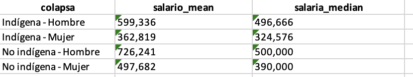

# Numéricos
1
2
3.1
# Caracter o texto
"hola"
# Lógicos
TRUE
FALSEIntroducción a R
Documento de trabajo
1 Introducción
El presente código práctico aplicará las funciones fundamentales de Tidyverse a la Encuesta de Caracterización Socioeconómica Nacional (CASEN) de la edición 2022 reducida en su N. En función de los objetivos del curso, una variable fundamental será la pertencia a Pueblos Originarios. En particular, interesa describir las estadísticas a nivel educativo, ingreso autónomo, pobreza, entre otras.
La base oficial se puede encontrar En la página del Observatorio del Ministerio de Desarrollo Social.
2 Nociones previas: R Base
Estos son los tres tipos de datos más básicos en R: numéricos, texto (caracter) y lógicos. Todo lo que trabajemos en R parte desde estas formas elementales.
R funciona como una calculadora: puedes hacer operaciones directamente.
2 + 2 # suma
50 * 100 # multiplicación
4556 - 1000 # resta
6565 / 89 # divisiónLos operadores lógicos nos permiten hacer comparaciones entre valores. El resultado siempre será un valor lógico: TRUE o FALSE. Esto es fundamental para filtros y condicionales en análisis de datos.
1 == 1 # igualdad
1 == 2
40 != 30 # desigualdad
40 != 40
31 > 18 # mayor que
40 < 80 # menor que
40 >= 40 # mayor o igual
50 >= 40
4 <= 5 # menor o igualR es un lenguaje basado en objetos. Podemos crear objetos (variables) con <- y luego reutilizarlos en operaciones. Esto es clave para construir flujos de trabajo limpios y organizados.
# Crear objeto
año <- 1993
año
# Operaciones con objetos
año + 10
2024 - año
# Crear nuevo objeto a partir de un cálculo
edad <- 2024 - año
edad3 Vamos a la CASEN desde Tidyverse
3.1 Cargar base de datos
Cargamos la base de datos directamente desde GitHub. Para hacerlo, solo hay que correr el código con Control/Command + Enter.
url <- "https://raw.githubusercontent.com/centrociir/interculturales/refs/heads/main/clases/clase1/bbdd/casen2022_sample.csv"
destfile <- "casen2022_sample.csv"
# Leerla directamente en R
casen <- read.csv(destfile, encoding = "UTF-8")
head(casen) region nse sexo ecivil educ pueblos_indigenas pobreza yautcor
1 4 7 2 8 6 0 3 660000
2 5 1 2 5 1 0 3 NA
3 16 2 2 8 2 0 3 NA
4 16 6 1 1 2 0 3 416667
5 5 6 2 8 0 0 3 NA
6 13 3 1 NA 1 0 3 NA3.2 Cargar librería necesaria
#install.packages(tidyverse) En caso de no estar instalado
library(tidyverse)
library(dplyr)3.3 Examinamos base de datos
¿Qué se hace acá? Se explora la estructura y el resumen estadístico de las variables de la base casen. Se identifican tipos de variables y rangos de valores.
casen |> glimpse() Rows: 2,000
Columns: 8
$ region <int> 4, 5, 16, 16, 5, 13, 8, 1, 6, 13, 7, 8, 3, 2, 8, 14,…
$ nse <int> 7, 1, 2, 6, 6, 3, 4, 2, 6, 6, 7, 4, 1, 2, 4, 2, 1, 3…
$ sexo <int> 2, 2, 2, 1, 2, 1, 2, 2, 1, 1, 2, 1, 1, 1, 1, 1, 2, 2…
$ ecivil <int> 8, 5, 8, 1, 8, NA, 1, 8, 1, 2, 6, 1, 1, 1, 8, 5, NA,…
$ educ <int> 6, 1, 2, 2, 0, 1, 1, 3, 4, 11, 11, 3, 5, 1, 8, 6, 1,…
$ pueblos_indigenas <int> 0, 0, 0, 0, 0, 0, 0, 0, 0, 0, 0, 0, 0, 1, 0, 0, 0, 0…
$ pobreza <int> 3, 3, 3, 3, 3, 3, 3, 3, 3, 3, 3, 3, 3, 3, 3, 3, 3, 3…
$ yautcor <int> 660000, NA, NA, 416667, NA, NA, NA, NA, 1205833, NA,…summary(casen) #Función de R base region nse sexo ecivil
Min. : 1.00 Min. :1.000 Min. :1.00 Min. :1.000
1st Qu.: 5.00 1st Qu.:2.000 1st Qu.:1.00 1st Qu.:1.000
Median : 8.00 Median :3.000 Median :2.00 Median :2.000
Mean : 8.72 Mean :3.245 Mean :1.54 Mean :4.414
3rd Qu.:13.00 3rd Qu.:4.000 3rd Qu.:2.00 3rd Qu.:8.000
Max. :16.00 Max. :7.000 Max. :2.00 Max. :8.000
NA's :344
educ pueblos_indigenas pobreza yautcor
Min. :-88.000 Min. :0.000 Min. :1.000 Min. : 2083
1st Qu.: 1.000 1st Qu.:0.000 1st Qu.:3.000 1st Qu.: 250000
Median : 4.000 Median :0.000 Median :3.000 Median : 439167
Mean : 4.058 Mean :0.139 Mean :2.896 Mean : 600425
3rd Qu.: 6.000 3rd Qu.:0.000 3rd Qu.:3.000 3rd Qu.: 700000
Max. : 12.000 Max. :1.000 Max. :3.000 Max. :11518333
NA's :1 NA's :875 4 Empecemos a procesar!
4.1 Mutate y select: Crear, recodificar y seleccionar.
mutate() sirve para crear nuevas variables o transformar variables existentes.
select() permite elegir columnas específicas para inspeccionarlas o trabajar solo con ellas.
Ambas funciones son parte del flujo de trabajo de dplyr (Tidyverse), y se usan en cadena con el operador |> (pipe) para aplicar transformaciones claras y ordenadas.
Para saber la etiqueta correspondiente de las variables debemos acudir al libro de códigos de la Encuesta Casen que se encuentra aquí bajo el nombre “Libro de códigos Base de datos Casen 2022 (versión 18 marzo 2024)”.
La variable educación posee las siguientes etiquetas.
- Sin Educación Formal
- Básica incompleta
- Básica completa
- Media humanista incompleta
- Media técnica profesional incompleta
- Media humanista completa
- Media técnica profesional completa
- Técnico nivel superior incompleta
- Técnica nivel superior completo
- Profesional incompleto
- Postgrado incompleto
- Profesional completo
- Postgrado completo
En base a lo que aprendimos con la función mutate podemos realizar la siguiente recodificación:
casen <- casen |> #Renombramos el objeto
dplyr::mutate(
educ_nivel = dplyr::case_when(
educ %in% 0:1 ~ "Sin educación",
educ %in% 2:4 ~ "Básica",
educ %in% 5:6 ~ "Media",
educ %in% 7:8 ~ "Técnico nivel superior",
educ %in% 9:11 ~ "Profesional",
educ == 12 ~ "Postgrado",
TRUE ~ NA_character_
),
educ_nivel = factor(educ_nivel, levels = c(
"Sin educación", "Básica", "Media",
"Técnico nivel superior", "Profesional", "Postgrado"
), ordered = TRUE)
)Se usa mutate() junto con case_when() para crear una nueva variable categórica llamada educ_nivel a partir de educ, agrupando los valores numéricos en tramos más comprensibles.
Luego se convierte esa variable a un factor ordenado, lo que es útil para análisis y visualizaciones en orden lógico (por ejemplo, del nivel más bajo al más alto).
Una forma de cerciorarse de que esta bien recodificado, es aplicar un select de las variables (sin convertirla en objeto).
casen |> select(educ, educ_nivel) |> head(5) educ educ_nivel
1 6 Media
2 1 Sin educación
3 2 Básica
4 2 Básica
5 0 Sin educaciónUna recodificación se puedo aplicar yautco (Ingereso autónomo corregido) en base los quintiles.
quantile(casen$yautcor, na.rm = TRUE) 0% 25% 50% 75% 100%
2083 250000 439167 700000 11518333 Una forma más sofisticada de pedir los deciles
quantile(casen$yautcor, probs = seq(0, 1, 0.1), na.rm = TRUE) 0% 10% 20% 30% 40% 50% 60%
2083.0 120000.0 200000.0 300000.0 400000.0 439167.0 500000.0
70% 80% 90% 100%
600000.0 804666.4 1205499.8 11518333.0 Se crea una nueva variable llamada decil_yautcor, que clasifica a cada persona dentro del decil que le corresponde según su ingreso autónomo. Se usa cut() junto con los puntos de corte entregados por quantile().
casen <- casen |>
mutate(
decil_yautcor = cut(
yautcor,
breaks = quantile(yautcor, probs = seq(0, 1, 0.1), na.rm = TRUE),
include.lowest = TRUE,
labels = paste0("Decil ", 1:10)
)
)casen <- casen %>%
mutate(decil_yautcor2 = case_when(
yautcor <= 120000 ~ "decil1",
yautcor <= 200000 ~ "decil2",
yautcor <= 300000 ~ "decil3",
yautcor <= 400000 ~ "decil4",
yautcor <= 439167 ~ "decil5",
yautcor <= 500000 ~ "decil6",
yautcor <= 600000 ~ "decil7",
yautcor <= 804666.4 ~ "decil8",
yautcor <= 1205499.8 ~ "decil9",
yautcor <= 11518333 ~ "decil10",
TRUE ~ NA_character_
))casen |> select(yautcor, decil_yautcor, decil_yautcor2) |>
head(5) yautcor decil_yautcor decil_yautcor2
1 660000 Decil 8 decil8
2 NA <NA> <NA>
3 NA <NA> <NA>
4 416667 Decil 5 decil5
5 NA <NA> <NA>4.2 Group_by y summarise: Transmitir la información
4.2.1 Variables númericas: Ingreso autónomo corregido (yautcor).
✏️ ¿Qué estamos haciendo aquí?
Estamos agrupando la base según la variablepueblos_indigenas, que indica si una persona se identifica o no con un pueblo originario. Luego, dentro de cada grupo, calculamos el promedio de ingreso autónomo corregido (yautcor).
El parámetrona.rm = TRUEsirve para ignorar los datos perdidos (valoresNA).
✅ ¡Y así de simple! Ya estamos haciendo análisis comparativo entre grupos.
casen |> group_by(pueblos_indigenas) |>
summarise(salario = mean(yautcor, na.rm = TRUE)) #Borrar valores perdidos.# A tibble: 2 × 2
pueblos_indigenas salario
<int> <dbl>
1 0 617099.
2 1 465819.✏️ ¿Y ahora qué hicimos?
Hemos agregado otra dimensión de análisis:sexo. Ahora no solo vemos si hay diferencias entre personas indígenas y no indígenas, sino también dentro de cada grupo según si son hombres o mujeres.
Además, calculamos no solo el promedio, sino también la mediana, que es un excelente complemento, especialmente cuando hay ingresos muy extremos que distorsionan los promedios.
casen |> group_by(pueblos_indigenas, sexo) |> # Veámoslo con sexo.
summarise(salario_mean = mean(yautcor, na.rm = TRUE),
salaria_median = median(yautcor, na.rm = TRUE)) # Agregamos otro estadístico# A tibble: 4 × 4
# Groups: pueblos_indigenas [2]
pueblos_indigenas sexo salario_mean salaria_median
<int> <int> <dbl> <dbl>
1 0 1 726241. 500000
2 0 2 497682. 390000
3 1 1 599336. 496666.
4 1 2 362819. 324576.casen |> group_by(pueblos_indigenas, sexo) |> # Veámoslo con sexo.
summarise(salario_mean = mean(yautcor, na.rm = TRUE),
salario_median = median(yautcor, na.rm = TRUE)) |> # Agregamos otro estadístico
mutate(ratio = salario_mean/salario_median) #un ratio alto puede sugerir que dentro del grupo hay mucha dispersión o desigualdad# A tibble: 4 × 5
# Groups: pueblos_indigenas [2]
pueblos_indigenas sexo salario_mean salario_median ratio
<int> <int> <dbl> <dbl> <dbl>
1 0 1 726241. 500000 1.45
2 0 2 497682. 390000 1.28
3 1 1 599336. 496666. 1.21
4 1 2 362819. 324576. 1.12La mayor desigualdad relativa está en hombres no indígenas, donde el ingreso promedio supera en un 45% a la mediana. Esto indica la presencia de personas con ingresos muy altos dentro del grupo.
4.2.2 Variables categóricas
✏️ ¿Qué estamos haciendo?
Aquí creamos una tabla con frecuencias y porcentajes de nivel educativo (educ_nivel) dentro de cada grupo (pueblos_indigenas).
Luego, usamos DT::datatable() para convertir la tabla en un formato interactivo, donde podemos ordenar, buscar y exportar la información.
library(DT) #Tabla dinámica
casen_tabla <- casen |>
filter(!is.na(educ_nivel)) |>
count(pueblos_indigenas, educ_nivel, name = "n") |>
group_by(pueblos_indigenas) |>
mutate(
total = sum(n),
porcentaje = round(100 * n / total, 1)
) |>
arrange(pueblos_indigenas, educ_nivel)
DT::datatable(casen_tabla)Veamos cómo asegurarnos de que todos los niveles de educación aparezcan, incluso si un grupo no tiene personas en algún nivel.
casen_tabla2 <- casen |>
filter(!is.na(educ_nivel)) |>
count(pueblos_indigenas, educ_nivel, name = "n") |>
complete(pueblos_indigenas, educ_nivel, fill = list(n = 0)) |> # Completar el postgrado
group_by(pueblos_indigenas) |>
mutate(
total = sum(n),
porcentaje = round(100 * n / total, 1)
) |>
arrange(pueblos_indigenas, educ_nivel)
DT::datatable(casen_tabla2)4.3 Encadenar las funciones
# Seleccionamos solo las variables necesarias para el análisis:
# - pueblos_indigenas: para identificar si una persona se reconoce indígena
# - sexo: para distinguir entre hombres y mujeres
# - yautcor: ingreso autónomo corregido, nuestra variable de interés numérica
casen_tabla3 <- casen |>
select(pueblos_indigenas, sexo, yautcor) |>
# Reemplazamos los valores codificados por etiquetas legibles.
# 0 será "No indígena" y 1 será "Indígena"
mutate(
pueblos_indigenas = case_when(
pueblos_indigenas == 0 ~ "No indígena",
pueblos_indigenas == 1 ~ "Indígena",
TRUE ~ NA_character_ # Por si hubiera algún valor extraño o NA
),
# Hacemos lo mismo con la variable sexo:
# 1 será "Hombre", 2 será "Mujer"
sexo = case_when(
sexo == 1 ~ "Hombre",
sexo == 2 ~ "Mujer",
TRUE ~ NA_character_
),
# Creamos una nueva variable que combine ambos grupos:
# Por ejemplo: "Indígena - Mujer", "No indígena - Hombre", etc.
colapsa = paste(pueblos_indigenas, sexo, sep = " - ")
) |>
# Agrupamos por esta nueva variable combinada (colapsa)
group_by(colapsa) |>
# Calculamos los dos estadísticos principales:
# - El ingreso promedio (mean)
# - El ingreso mediano (median)
# Ignoramos los NA con `na.rm = TRUE`
summarise(
salario_mean = mean(yautcor, na.rm = TRUE),
salaria_median = median(yautcor, na.rm = TRUE),
.groups = "drop" # Para evitar que el resultado quede agrupado
)
DT::datatable(casen_tabla3)4.4 Exportar resultados a Excel
Una vez que hemos creado una tabla limpia y legible, puede ser útil exportarla para compartir con otras personas, usarla en un informe o guardarla como respaldo. Aquí usaremos dos paquetes adicionales:
scales: para formatear los números y eliminar la notación científica (por ejemplo, mostrar 599,336 en vez de 599336.4444444445).writexl: para guardar la tabla directamente en formato.xlsx(compatible con Excel).
# Cargamos las librerías necesarias
library(scales)
library(writexl)
# Usamos mutate() para formatear las columnas numéricas:
# 'comma()' agrega separadores de miles y elimina notación científica
# 'accuracy = 1' indica que redondearemos al número entero más cercano
casen_tabla_excel <- casen_tabla3 |>
mutate(
salario_mean = comma(salario_mean, accuracy = 1), # Ej: 1.234.567
salaria_median = comma(salaria_median, accuracy = 1) # Ej: 1.100.000
)
# Finalmente, guardamos la tabla en un archivo Excel
# Este se guarda dentro de la carpeta 'bbdd' con el nombre 'casen_tabla.xlsx'
write_xlsx(casen_tabla_excel, "bbdd/casen_tabla.xlsx")
5 Cierre
A partir de los análisis de la Encuesta CASEN, hemos recorrido los elementos fundamentales para comenzar a trabajar con datos en R. Si bien este fue solo un primer acercamiento, ya contamos con herramientas suficientes para importar, explorar, transformar, resumir y comunicar información de manera clara y reproducible.
Durante este recorrido, es importante distinguir:
R base nos ofrece funciones fundamentales para manipular datos (summary(), read.csv(), mean(), etc.), pero muchas veces estas son limitadas en términos de legibilidad y eficiencia cuando trabajamos con grandes volúmenes de datos o flujos de trabajo complejos. Las librerías son herramientas externas.
Por eso, incorporamos librerías como:
tidyverse, que nos permitió usar funciones más intuitivas (mutate,select,filter,group_by,summarise), y trabajar de forma encadenada con el operador|>.DT, que transformó tablas estáticas en objetos interactivos.scalesywritexl, que nos ayudaron a mejorar la comunicación de resultados y a exportar datos en formatos más accesibles.